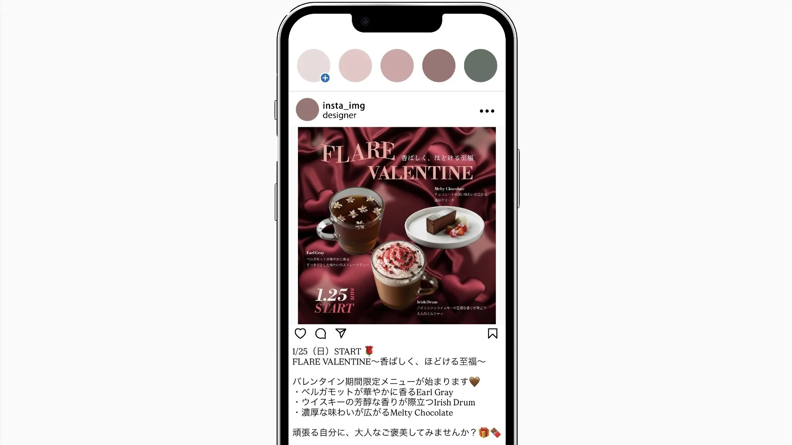

Overview
概要
バレンタイン限定メニューの販促を目的としたバナーを制作しました。
単なる商品告知ではなく、「香ばしく、ほどける至福」という体験価値を視覚化することを目的としています。シーズン訴求とブランドトーンの両立を意識し、広告性を抑えたデザインを目指しました。

投稿イメージ
- 季節感とブランドの世界観を保ちながら、体験価値を直感的に伝えるビジュアルがない
- SNS上は広告があふれていて、商品の魅力が短期的な販促情報として消費されやすい
- 期間限定メニューの認知を拡大し、来店意欲を高める
- 価格訴求ではなく、情緒的価値によってブランド体験を演出する
- 世界観を通して、ブランドの温度感を伝え、長期的なイメージ形成につなげる
- 期間限定ドリンクを待ちわびている20代前半～30代前半の女性
- イベントを消費するのではなく、自分へのご褒美として楽しむ人
- 上質さや特別感を求めている人
Design
デザイン設計
バレンタインを象徴する赤やピンクではなく、深みのあるボルドーをベースカラーとすることで「艶・温度・濃度」を表現しました。サテン生地の背景でとろける質感を視覚化し、商品の濃厚さと結びつけています。香りが広がる様を表すためにコピーのフォントにこだわり、タイトルを波のように歪ませました。クラシカルなセリフ体を大きくゆとりを持って配置することで、可愛らしさよりも余韻や上質感を感じさせるタイポグラフィとなり、文字そのものがブランドトーンを表せるように設計しています。
INFORMATION
情報設計
商品情報は最小限に抑え、ビジュアル優先の構成にすることで感情への訴求を強めました。情報の優先順位に沿って視線を誘導するために、テキストのジャンプ率とウェイト差を明確にしています。メニュー名と説明文でフォントを切り替えることで、情報の階層を明確化し、世界観を保ちながら可読性を高めました。